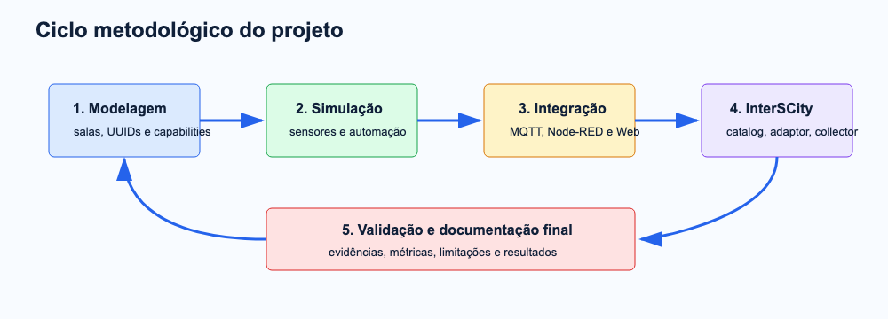
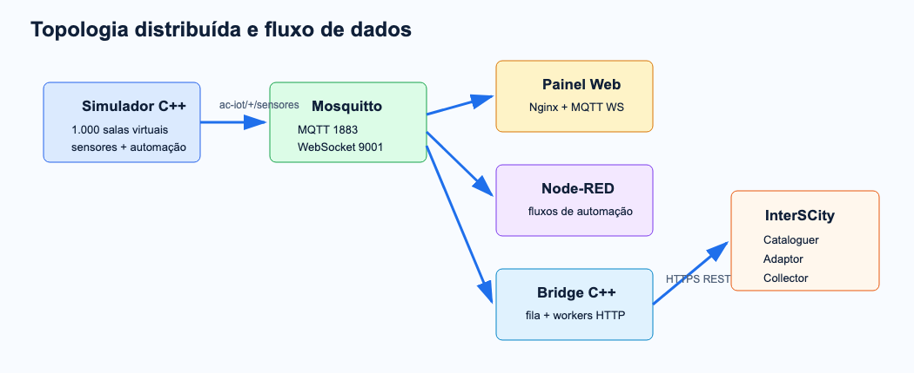
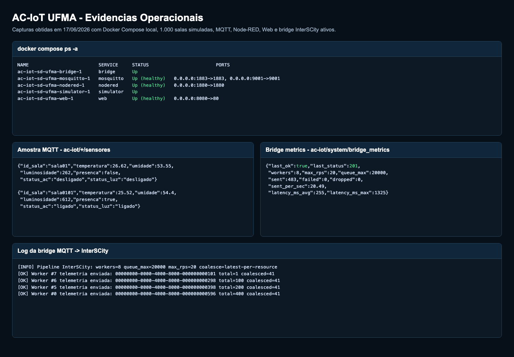
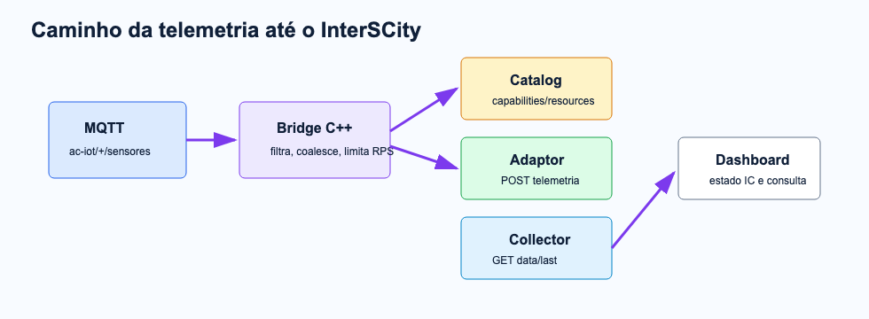
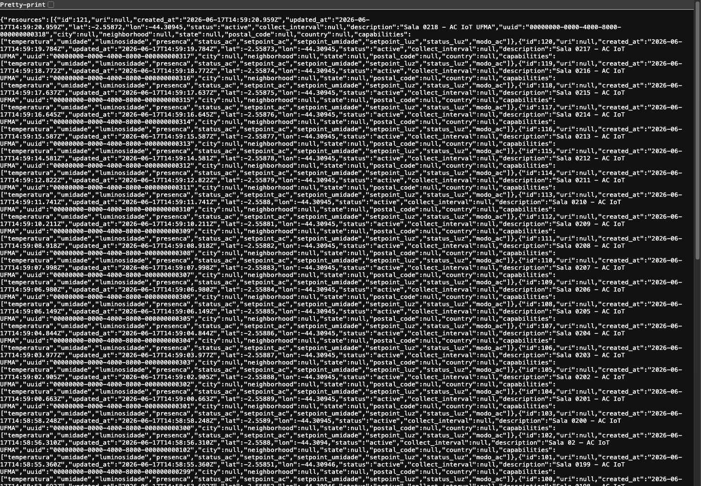
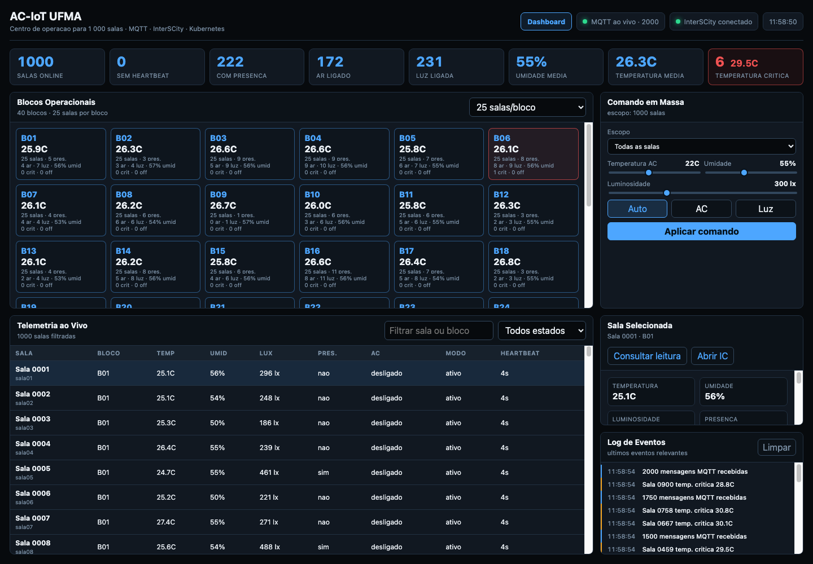
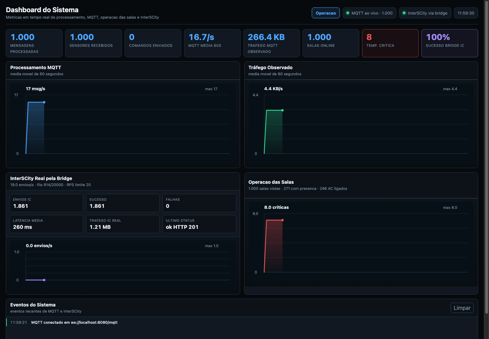
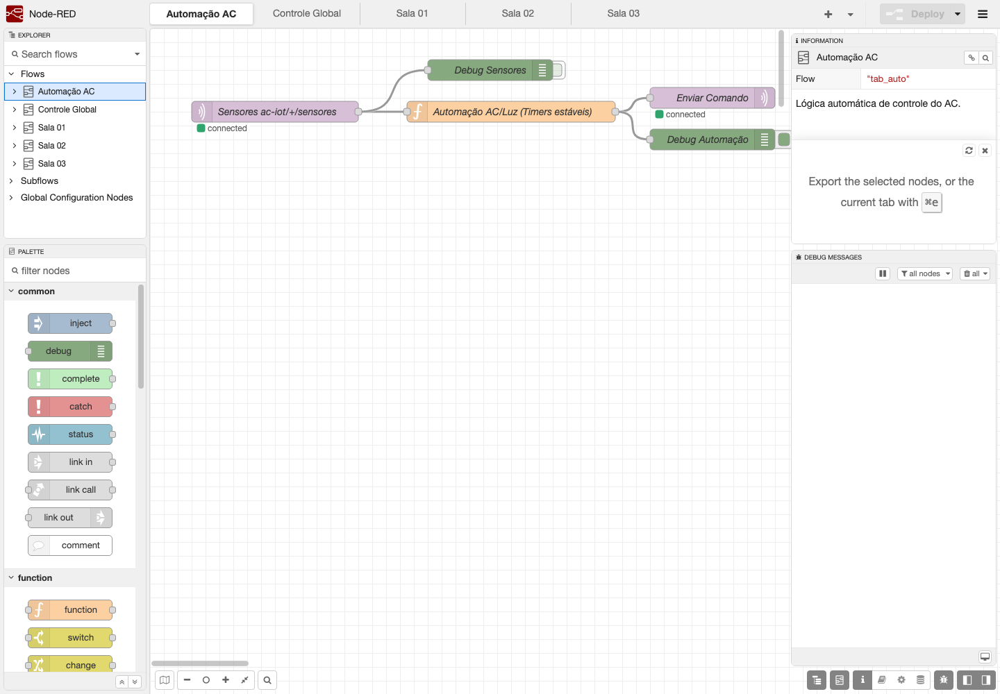

Este relatório técnico-científico documenta a concepção, a implementação e a avaliação experimental do projeto Gestão Energética dos Ar-Condicionados das Salas de Aula do Prédio Paulo Freire via IoT, doravante denominado AC-IoT UFMA, desenvolvido no âmbito da disciplina de Sistemas Distribuídos da Engenharia da Computação da UFMA. O Termo de Abertura do Projeto definiu como problema central a ausência de monitoramento e automação dos aparelhos de ar-condicionado em salas de aula, cenário que favorece desperdício energético em períodos de baixa ou nenhuma ocupação. A versão final do sistema preserva esse propósito e o atualiza tecnicamente por meio de uma arquitetura distribuída composta por simulação IoT em C++17, broker MQTT Mosquitto, fluxos Node-RED, painel web operacional, dashboard de métricas e bridge C++ para integração com a plataforma InterSCity UFMA via serviços REST. A solução foi projetada segundo princípios de baixo acoplamento, orientação a eventos, observabilidade, controle de carga e tolerância parcial a falhas, aspectos recorrentes em sistemas IoT e plataformas de cidades inteligentes (FAHMIDEH; ZOWGHI, 2020; TEJASVI et al., 2020). A avaliação local considerou 1.000 salas simuladas, 40 blocos operacionais, comunicação MQTT em tempo real, Node-RED ativo, painel web responsivo e bridge com 8 workers HTTP, fila coalescente, limite de 20 requisições por segundo e envio aceito pelo InterSCity com status HTTP 201. Os resultados indicam que o sistema final atende ao objetivo de demonstrar uma solução distribuída para gestão energética e operacional de ambientes climatizados, ainda que a etapa de hardware físico tenha permanecido simulada e a fila da bridge não possua persistência durável.
Ambientes acadêmicos com múltiplas salas climatizadas constituem um domínio apropriado para aplicação de Sistemas Distribuídos, pois combinam sensores, atuadores, comunicação em rede, processamento contínuo de eventos e tomada de decisão operacional. Em edifícios inteligentes, funções como climatização, iluminação, segurança e conforto passam a depender de uma infraestrutura computacional heterogênea e conectada, o que amplia tanto o potencial de automação quanto os riscos de falhas, inconsistências e baixa observabilidade (CIHOLAS et al., 2019). No caso específico de sistemas HVAC, a literatura destaca que conforto térmico e eficiência energética são objetivos concorrentes, exigindo mecanismos de controle capazes de reagir a ocupação, temperatura, umidade e condições ambientais (MERABET et al., 2021).
No contexto da Universidade Federal do Maranhão, o problema operacional abordado foi inicialmente delimitado no Termo de Abertura do Projeto como a gestão energética dos ar-condicionados das salas de aula do Prédio Paulo Freire. O TAP destacou que a edificação possui intensa rotatividade de uso ao longo do dia letivo e que o clima de São Luís, marcado por temperaturas elevadas e alta umidade durante praticamente todo o ano, torna o uso de climatização uma necessidade cotidiana. Nesse cenário, o controle manual dos aparelhos cria risco recorrente de desperdício: salas vazias podem permanecer climatizadas entre aulas, antes do início das atividades ou após o encerramento do expediente.
A versão final do projeto manteve essa justificativa e ampliou sua implementação para uma infraestrutura distribuída de monitoramento, automação e integração externa. O problema deixa de ser apenas “ligar ou desligar ar-condicionado” e passa a envolver visibilidade operacional sobre presença, temperatura, umidade, luminosidade, estado do ar-condicionado, estado da iluminação, comandos, heartbeat de salas e status de comunicação com InterSCity. Sem uma camada distribuída de monitoramento, o operador não dispõe de indicadores suficientes para identificar ambientes críticos, validar o funcionamento da automação ou verificar se os dados estão sendo persistidos em uma plataforma urbana interoperável.
O AC-IoT UFMA foi concebido, portanto, como um sistema distribuído orientado a eventos. A adoção de MQTT é coerente com aplicações IoT por sua comunicação publish/subscribe, adequada a dispositivos e serviços desacoplados em cenários de telemetria contínua (HINDY et al., 2020). A integração com InterSCity se justifica porque plataformas de cidades inteligentes devem oferecer mecanismos de interoperabilidade, catálogo de recursos, coleta de dados e suporte à composição de aplicações urbanas (FAHMIDEH; ZOWGHI, 2020). A presença de Node-RED no projeto complementa a arquitetura ao permitir modelagem visual de fluxos e regras de automação, abordagem frequentemente explorada para reduzir a complexidade de composição em sistemas IoT (DIAS; RESTIVO; FERREIRA, 2021).
O objetivo geral atualizado é desenvolver e validar, em ambiente simulado e containerizado, um sistema distribuído de gestão energética e operacional dos ar-condicionados das salas de aula do Prédio Paulo Freire da UFMA, integrando telemetria IoT simulada, comunicação MQTT, automação por Node-RED, painel web em tempo real e publicação/consulta de dados na plataforma InterSCity UFMA.
Os objetivos específicos da versão final foram ajustados em relação ao TAP inicial para refletir as decisões efetivamente implementadas no sistema:
| Código | Objetivo específico atualizado | Situação no sistema final |
|---|---|---|
| OE1 | Configurar ambiente local containerizado com Mosquitto, simulador, bridge, web e Node-RED. | Atendido com Docker Compose. |
| OE2 | Simular sensores e atuadores das salas com telemetria de temperatura, umidade, luminosidade, presença, estado do AC, estado da luz e setpoints. | Atendido por simulador C++17. |
| OE3 | Implementar comunicação publish/subscribe por MQTT para desacoplar produtores, consumidores, automação e bridge. | Atendido com tópicos `ac-iot/+/sensores`, comandos por sala e métricas da bridge. |
| OE4 | Implementar automação de conforto térmico e ocupação, considerando presença, ausência, setpoints e atrasos de acionamento. | Atendido no simulador e complementado por fluxo Node-RED. |
| OE5 | Integrar o sistema à plataforma InterSCity UFMA por meio de registro de resources/capabilities e envio de telemetria ao Adaptor. | Atendido pela bridge C++ com libcurl. |
| OE6 | Construir painel web operacional para visualização em tempo real, comando em massa e consulta ao InterSCity. | Atendido com Nginx, HTML, CSS e JavaScript. |
| OE7 | Disponibilizar dashboard de métricas para observar processamento MQTT, tráfego, latência, fila, sucesso/falha da bridge e estado InterSCity. | Atendido em `dashboard.html`. |
| OE8 | Validar o fluxo completo em escala simulada, com 1.000 salas e evidências de execução local. | Atendido por capturas, logs, amostras MQTT e métricas HTTP 201. |
O sistema implementado cobre a simulação de sensores, automação de presença/conforto, comunicação MQTT, painel web em tempo real, fluxos Node-RED, bridge para InterSCity e evidências de execução em Docker Compose. Em relação ao TAP inicial, houve substituição da simulação Wokwi/ESP32 e do dashboard Streamlit por um simulador C++17 escalável e por uma interface web operacional servida por Nginx. Essa mudança não altera a finalidade do projeto; ela atualiza a solução para validar melhor propriedades de Sistemas Distribuídos, como escala, concorrência, desacoplamento, observabilidade e controle de carga. Hardware físico como ESP32, sensor de corrente, emissor infravermelho e relé permaneceu delimitado como extensão futura, pois o foco final foi validar comportamento distribuído de software e integração de dados.
Sistemas distribuídos são caracterizados pela cooperação entre componentes computacionais autônomos conectados em rede, nos quais a percepção do usuário deve ser a de um serviço coerente, apesar da existência de múltiplos processos, atrasos de comunicação e falhas parciais. Em aplicações IoT, essa característica é intensificada pela presença de sensores, atuadores, gateways, serviços de borda, brokers de mensagem e plataformas de armazenamento/consulta. A literatura sobre arquiteturas IoT para cidades inteligentes reforça que tais sistemas precisam lidar simultaneamente com interoperabilidade, escalabilidade, heterogeneidade, processamento de dados e integração com aplicações externas (FAHMIDEH; ZOWGHI, 2020).
O padrão publish/subscribe adotado pelo MQTT é apropriado para esse cenário porque separa produtores e consumidores de mensagens: o simulador publica telemetria sem conhecer painel, Node-RED ou bridge; esses consumidores, por sua vez, assinam tópicos conforme sua responsabilidade. Essa separação reduz acoplamento temporal e espacial, facilita a adição de novos consumidores e favorece expansão incremental do sistema. Em estudos recentes sobre segurança e detecção em redes MQTT, Hindy et al. (2020) descrevem o protocolo como uma tecnologia recorrente de comunicação máquina-a-máquina em IoT, justamente pela leveza e pelo modelo orientado a mensagens.
A integração com uma plataforma urbana, por sua vez, aproxima o protótipo do conceito de middleware de cidade inteligente. Tejasvi et al. (2020) argumentam que middlewares IoT para cidades inteligentes precisam lidar com alto volume de dispositivos, escalabilidade horizontal e aumento de disponibilidade/throughput. Embora o AC-IoT seja um protótipo acadêmico, decisões como fila assíncrona, pool de workers HTTP, controle de taxa, coalescência por recurso e publicação de métricas internas foram adotadas para reproduzir desafios reais desse tipo de middleware.
No domínio de automação predial, o acionamento de HVAC não pode ser analisado apenas como comando remoto. Merabet et al. (2021) mostram que controle de edifícios envolve compromisso entre conforto térmico e eficiência energética, sendo necessário observar ocupação, condições ambientais e comportamento do sistema. Por isso, o simulador implementa presença, temperatura, umidade, luminosidade, setpoints, temporizadores e estados de atuadores, permitindo avaliar regras operacionais sem depender de hardware físico na fase de validação distribuída.
| Conceito | Aplicação no projeto |
|---|---|
| Middleware de mensagens | Mosquitto com MQTT TCP 1883 e WebSocket 9001. |
| Arquitetura orientada a eventos | Telemetrias e comandos trafegam por tópicos MQTT. |
| Desacoplamento | Simulador, painel, Node-RED e bridge não dependem de chamadas diretas entre si. |
| Tolerância a falhas | Bridge continua operando se o InterSCity oscilar e aplica retry/rate limit. |
| Observabilidade | Métricas da bridge são publicadas em `ac-iot/system/bridge_metrics` e consumidas pelo dashboard. |
O desenvolvimento foi conduzido por prototipação incremental, com validação contínua de comunicação, integração e operação. Essa estratégia é adequada para sistemas distribuídos porque permite isolar falhas por componente, testar contratos de mensagem, observar o comportamento da fila e verificar a integração externa antes da consolidação do relatório. A metodologia também considerou que plataformas IoT e de cidades inteligentes tendem a evoluir por composição de serviços heterogêneos, exigindo decisões explícitas sobre interoperabilidade, escalabilidade e observabilidade (FAHMIDEH; ZOWGHI, 2020; TEJASVI et al., 2020).
O TAP apresentou como fluxo inicial Wokwi -> MQTT -> Node-RED -> InterSCity -> Dashboard Streamlit. Durante a execução, esse fluxo foi atualizado para simulador C++ -> Mosquitto -> Node-RED/Web/Bridge -> InterSCity -> Dashboard web. A mudança foi uma decisão de engenharia para permitir maior escala simulada, melhor controle sobre telemetria, captura de métricas internas da bridge e validação mais direta das propriedades distribuídas exigidas pela disciplina.
Inicialmente, definiu-se o modelo de domínio: cada sala possui identificador, UUID InterSCity, localização geográfica, capabilities de sensores e capabilities de atuadores. Em seguida, implementou-se o simulador C++ para gerar telemetria ambiental e estados de automação. A terceira etapa introduziu o broker MQTT e os tópicos de comunicação. A quarta etapa implementou a interface web operacional e os fluxos Node-RED. Por fim, a bridge InterSCity foi incorporada como componente de tradução entre telemetria MQTT e chamadas REST para Cataloguer, Adaptor e Collector.
A avaliação considerou critérios observáveis: disponibilidade dos containers, recepção de mensagens MQTT, atualização do painel em tempo real, execução de fluxos Node-RED, envio de telemetria para InterSCity, último status HTTP da bridge, tamanho de fila, taxa de envio e ausência de perdas por descarte no período amostrado. Esses critérios foram escolhidos porque cobrem tanto a dimensão funcional quanto propriedades não funcionais relevantes em sistemas distribuídos, como responsividade, tolerância a falhas externas e rastreabilidade operacional.
A Figura 1 sintetiza essa metodologia como um ciclo de engenharia. O diagrama explicita que a modelagem de domínio antecede a simulação, que a simulação alimenta a integração MQTT/Web/Node-RED e que a integração InterSCity é validada por evidências operacionais. A seta de retorno indica o caráter iterativo do desenvolvimento: falhas ou limitações identificadas na validação realimentam ajustes no modelo, no simulador e na bridge.

A arquitetura do AC-IoT UFMA foi organizada em serviços independentes executados em containers, com comunicação majoritariamente assíncrona. Essa decomposição evita que um único processo concentre simulação, controle, visualização e integração externa. Em termos arquiteturais, o broker MQTT funciona como barramento lógico de eventos, o simulador atua como produtor de telemetria, o painel e o Node-RED atuam como consumidores/operadores, e a bridge atua como adaptador de protocolo entre o domínio MQTT e o domínio REST do InterSCity.
Essa decisão reduz o acoplamento entre componentes e facilita a substituição futura de partes do sistema. Por exemplo, sensores físicos podem substituir o simulador sem alterar o painel, desde que preservem o contrato de mensagem; EMQX pode substituir Mosquitto em uma implantação de larga escala; e a bridge pode ser replicada quando houver suporte a shared subscriptions. A literatura sobre microserviços e IoT em cidades inteligentes ressalta que escalabilidade e disponibilidade dependem de modularização, distribuição de carga e contratos de comunicação bem definidos (WASEEM; LIANG; SHAHIN, 2020; TEJASVI et al., 2020).
A Figura 2 descreve a topologia lógica do sistema. Observa-se que o simulador C++ publica leituras em `ac-iot/+/sensores`, o Mosquitto distribui essas mensagens para múltiplos consumidores, o painel web recebe dados por WebSocket, o Node-RED interpreta eventos para automação e a bridge C++ traduz a telemetria para requisições HTTPS destinadas ao InterSCity. O diagrama evidencia o desacoplamento entre produtores e consumidores, pois cada componente depende do contrato de mensagem, não de chamadas diretas entre processos.

| Componente | Responsabilidade | Tecnologia |
|---|---|---|
| Simulador | Gerar leituras de temperatura, umidade, luminosidade, presença e estados de atuadores. | C++17, libmosquitto, YAML |
| Broker MQTT | Distribuir telemetria e comandos entre serviços. | Eclipse Mosquitto |
| Web | Operar salas, visualizar KPIs, blocos e consultar InterSCity. | Nginx, HTML, CSS, JavaScript |
| Node-RED | Modelar automações em fluxo e depurar mensagens. | Node-RED |
| Bridge InterSCity | Registrar capabilities/recursos e enviar telemetria ao Adaptor. | C++17, libcurl, nlohmann/json |
A implementação foi organizada para preservar separação de responsabilidades entre simulação, transporte de mensagens, automação, interface operacional e integração externa. Essa separação é relevante porque o comportamento de um sistema distribuído não depende apenas da correção local de cada módulo, mas também da forma como esses módulos se comunicam sob atraso, indisponibilidade parcial e variação de carga.
| Requisito de engenharia | Decisão adotada | Justificativa técnica |
|---|---|---|
| Baixo acoplamento entre componentes | Comunicação publish/subscribe por MQTT. | Permite que novos consumidores sejam adicionados sem modificar o simulador. |
| Operação em tempo real local | Painel web via MQTT sobre WebSocket. | Reduz latência perceptível e evita polling HTTP intensivo. |
| Integração com plataforma externa | Bridge MQTT -> REST InterSCity. | Traduz o modelo de eventos local para o modelo de recursos/capabilities da plataforma urbana. |
| Controle de sobrecarga | Fila com limite, coalescência e rate limit. | Evita bloqueio do callback MQTT e reduz envio de estados obsoletos. |
| Observabilidade | Métricas publicadas no tópico `ac-iot/system/bridge_metrics`. | Permite que o dashboard mostre saúde da integração sem depender de inspeção manual de logs. |
O simulador mantém estado por sala e atualiza sensores com variação controlada. A lógica considera presença, setpoint, atraso para ligar/desligar ar-condicionado, luminosidade e cenários críticos. A inclusão de temporizadores evita uma automação artificialmente instantânea e aproxima o comportamento do sistema de uma operação predial real, na qual presença e ausência precisam ser estabilizadas antes de acionar cargas. Esse cuidado dialoga com a literatura de controle predial, que aponta a necessidade de balancear conforto térmico e consumo energético (MERABET et al., 2021).
// src/simulator/simulation.hpp
if (s.modo_ac == "ativo") {
if (!s.presenca) {
s.presenca_desde = 0;
if (s.ausencia_desde && (now - s.ausencia_desde) >= DELAY_AC_DESLIGAR) {
s.status_ac = "desligado";
s.status_luz = "desligado";
}
} else {
s.ausencia_desde = 0;
s.status_luz = "ligado";
bool ac_ok = s.presenca_desde && (now - s.presenca_desde) >= DELAY_AC_LIGAR;
if (ac_ok) s.status_ac = "ligado";
}
}A bridge foi desenhada para não bloquear o callback MQTT com chamadas HTTP. O método `enqueue` filtra campos válidos, associa sala a UUID InterSCity, aplica coalescência por recurso e controla backpressure por tamanho máximo de fila. Essa decisão é essencial porque o InterSCity é uma dependência externa e, portanto, sujeita a latência, falhas transitórias e variação de disponibilidade. Em vez de transformar cada leitura MQTT em uma chamada síncrona, a bridge desacopla recepção e envio, preservando a responsividade do sistema local.
// src/bridge/pipeline.hpp
json filtered;
for (const auto& [k, v] : raw_payload.items())
if (TELEMETRY_FIELDS.count(k) && !v.is_null())
filtered[k] = v;
auto pending = pending_payloads_.find(uuid);
if (pending != pending_payloads_.end()) {
pending->second = std::move(filtered);
coalesced_++;
return;
}
if (pending_order_.size() >= queue_max_) {
dropped_++;
return;
}O cliente REST monta o payload no formato esperado pelo Adaptor, encapsulando cada capability em uma lista de valores com timestamp ISO 8601 UTC. A rotina executa até três tentativas em falhas de servidor e evita retry em erros de cliente. Essa política diferencia falhas potencialmente transitórias, como indisponibilidade temporária da API, de erros que indicam problema de contrato ou payload. Em sistemas distribuídos, essa distinção é importante para evitar sobrecarga adicional sobre um serviço que já está degradado.
// src/bridge/interscity.hpp
json payload{{"data", json::object()}};
for (const auto& [key, val] : data.items()) {
if (!val.is_null())
payload["data"][key] = json::array({{{"value", val}, {"timestamp", ts}}});
}
for (int attempt = 1; attempt <= 3; ++attempt) {
auto r = post(adaptor_ + "/resources/" + uuid + "/data", payload);
if (r.status >= 200 && r.status < 300) { result.ok = true; break; }
if (r.status != 0 && r.status < 500) break;
std::this_thread::sleep_for(std::chrono::seconds(attempt * 2));
}O painel web implementa um cliente MQTT via WebSocket, atualiza KPIs, blocos operacionais, tabela de telemetria e estado InterSCity. As métricas internas da bridge são consumidas pelo tópico `ac-iot/system/bridge_metrics`, tornando visíveis taxa de envio, fila, falhas, bytes trafegados, latência e último status HTTP.
// src/web/static/app.js
function handleBridgeMetrics(data) {
lastBridgeMetrics = data;
const sent = Number(data.sent || 0);
const queue = Number(data.queue_size || 0);
if (data.last_ok) {
setICStatus(true, sent ? `InterSCity via bridge · ${sent}` : `InterSCity via bridge · fila ${queue}`);
} else if (sent || Number(data.total_attempted || 0)) {
icEverOk = sent > 0;
setICStatus(false, `InterSCity instavel · fila ${queue}`);
}
}A execução local usa Docker Compose com cinco serviços principais: Mosquitto, simulador, bridge, web e Node-RED. O Compose define portas, volumes, variáveis de ambiente e healthchecks. A configuração `ROOM_COUNT=1000` habilita o cenário de larga escala no simulador e na bridge.
A Figura 3 apresenta as evidências operacionais coletadas durante a execução local. O bloco superior confirma os containers ativos e saudáveis; a amostra MQTT comprova que a telemetria contém grandezas ambientais e estados de atuadores; as métricas da bridge demonstram envio aceito pelo InterSCity com HTTP 201, 8 workers e controle de taxa; e os logs mostram a progressão dos envios por UUID. Assim, a figura não é apenas ilustrativa: ela documenta a validação ponta a ponta da infraestrutura.
| Serviço | Porta | Observação |
|---|---|---|
| mosquitto | 1883, 9001 | MQTT TCP e WebSocket. |
| simulator | - | Publica telemetria a cada 30 segundos. |
| bridge | - | Envia dados ao InterSCity com 8 workers e limite de 20 req/s. |
| web | 8080 | Painel operacional e dashboard de métricas. |
| nodered | 1880 | Fluxos de automação e depuração. |

A comunicação com o InterSCity é um dos pontos centrais do projeto, pois transforma o protótipo local em produtor de dados interoperáveis para uma plataforma urbana. Na arquitetura adotada, cada sala é modelada como recurso, enquanto temperatura, umidade, luminosidade, presença, estado do ar-condicionado, estado da luz e setpoints são tratados como capabilities. Esse modelo segue a lógica de plataformas de cidades inteligentes, nas quais recursos físicos ou virtuais precisam ser catalogados, consultados e reutilizados por aplicações distintas (FAHMIDEH; ZOWGHI, 2020).
A bridge executa três papéis técnicos. Primeiro, registra ou valida capabilities e resources no Cataloguer. Segundo, converte mensagens MQTT em payloads REST aceitos pelo Adaptor. Terceiro, publica métricas internas para que o painel acompanhe o estado da integração. Essa terceira função é particularmente importante: sem observabilidade, o operador poderia visualizar telemetria local sem perceber que a persistência externa está degradada. A solução evita essa ambiguidade ao expor `last_status`, `last_ok`, taxa de envio, fila, falhas e latência média.
A Figura 4 detalha o caminho da telemetria no trecho MQTT-InterSCity. A mensagem é recebida pela bridge, normalizada, submetida ao controle de carga e enviada aos serviços Catalog, Adaptor e Collector. A ligação de retorno ao dashboard representa o uso das métricas da própria bridge como fonte de observabilidade, permitindo ao operador diferenciar falha local de indisponibilidade da plataforma externa.

Nos testes finais, a bridge publicou métricas com `last_status=201` e `last_ok=true`, indicando aceitação de telemetria pelo Adaptor. O dashboard de métricas registrou 100% de sucesso no período capturado, 1.000 salas online, 8 salas críticas e integração via bridge. Esses resultados demonstram que a comunicação com InterSCity não foi apenas descrita no projeto, mas efetivamente exercitada durante a execução local.
A Figura 5 registra a visualização do Cataloguer InterSCity com recursos AC-IoT cadastrados. A captura demonstra que os recursos apresentam UUID, descrição, coordenadas, status ativo e lista de capabilities, o que confirma a aderência do modelo de dados do protótipo ao formato de recursos esperado pela plataforma.

| Critério | Resultado observado | Status |
|---|---|---|
| Containers principais em execução | mosquitto, simulator, bridge, web e nodered ativos; healthcheck OK em mosquitto, web e Node-RED. | Aprovado |
| Publicação MQTT | Amostras recebidas em `ac-iot/+/sensores` com temperatura, umidade, luminosidade, presença e atuadores. | Aprovado |
| Dashboard operacional | 1.000 salas online, blocos operacionais, tabela ao vivo, comando em massa e log de eventos. | Aprovado |
| Bridge InterSCity | 8 workers, fila máxima 20.000, `last_status=201`, `last_ok=true`, taxa próxima de 20 req/s. | Aprovado |
| Node-RED | Fluxo de automação AC conectado ao tópico de sensores e envio de comandos. | Aprovado |
A Figura 6 apresenta a interface operacional principal em funcionamento. A captura mostra os KPIs globais, os blocos operacionais, a tabela de telemetria ao vivo, o painel de comando em massa, a sala selecionada e o log de eventos. Tecnicamente, essa tela comprova o consumo contínuo de MQTT via WebSocket e a consolidação de leituras por sala/bloco, permitindo que o operador identifique temperatura crítica, presença, estado do ar-condicionado, estado da luz e heartbeat.

A Figura 7 complementa a visão operacional ao apresentar o dashboard de métricas sistêmicas. Diferentemente da tela de operação sala a sala, essa captura evidencia indicadores agregados: mensagens MQTT processadas, taxa média de mensagens, tráfego observado, salas online, sucesso da bridge InterSCity, latência média, tráfego real para o InterSCity e último status HTTP. Esses dados são essenciais para avaliar saúde distribuída e não apenas comportamento funcional do frontend.

A Figura 8 mostra o fluxo Node-RED utilizado para automação AC/Luz. A entrada assina o tópico de sensores, o nó de função aplica a lógica de automação com temporizadores estáveis, e a saída publica comandos de retorno. A presença dos nós de depuração evidencia que o fluxo também atua como instrumento de inspeção, apoiando testes e validação de mensagens durante o desenvolvimento.

1.000 salas simuladas, 40 blocos operacionais com 25 salas/bloco e telemetria atualizada no painel.
Bridge com 8 workers, limite de 20 requisições/s, último status HTTP 201 e sucesso de envio no período capturado.
Painel e dashboard consumiram leituras por WebSocket, registrando mensagens recebidas e eventos críticos.
Comando em massa por escopo, seleção de sala, consulta InterSCity e log de eventos para apoio ao operador.
O resultado demonstra que o sistema local permanece funcional enquanto a comunicação externa é controlada por taxa e executada em segundo plano. O uso de fila coalescente é tecnicamente adequado para monitoramento operacional porque, quando múltiplas leituras de uma mesma sala se acumulam, o estado mais recente possui maior valor para tomada de decisão imediata do que leituras intermediárias atrasadas. Essa escolha reduz pressão sobre o serviço externo e preserva a atualização local do painel.
A publicação das métricas da bridge no próprio barramento MQTT também representa uma decisão arquitetural relevante: a observabilidade passa a fazer parte do fluxo distribuído, não ficando restrita a logs de container. Dessa forma, o painel distingue três estados: operação local MQTT, integração InterSCity via bridge e condição instável/sem resposta. Em sistemas IoT distribuídos, essa separação é necessária porque disponibilidade local e disponibilidade de persistência externa são propriedades diferentes.
Como limitação, a fila da bridge ainda é em memória; portanto, quedas longas do InterSCity podem levar à perda de telemetria caso a fila alcance o limite ou o container seja reiniciado. Além disso, a autenticação MQTT e o uso sistemático de TLS interno não foram ativados na versão final do protótipo. Para produção, recomenda-se persistência de eventos, autenticação por serviço/dispositivo, implantação com broker escalável, métricas Prometheus/Grafana e mecanismos de reprocessamento.
O projeto Gestão Energética dos Ar-Condicionados das Salas de Aula do Prédio Paulo Freire via IoT atingiu o objetivo atualizado de implementar e validar um sistema distribuído funcional para monitoramento, automação e integração externa de ambientes acadêmicos climatizados. A solução final preserva a motivação apresentada no TAP, desperdício energético associado ao controle manual e à ausência de visibilidade operacional, mas a materializa em uma arquitetura mais robusta para avaliação distribuída: simulador C++17, MQTT, Node-RED, painel web, dashboard de métricas e bridge InterSCity.
As evidências finais mostram operação com 1.000 salas simuladas, dashboard em tempo real, Node-RED ativo, bridge enviando telemetria ao InterSCity com HTTP 201 e recursos visíveis no Cataloguer. O projeto evidencia propriedades centrais de Sistemas Distribuídos: comunicação assíncrona, baixo acoplamento, concorrência, tolerância parcial a falhas externas, observabilidade, controle de carga e escalabilidade configurável. A evolução natural envolve substituir sensores simulados por dispositivos físicos, persistir filas, reforçar segurança e migrar para uma infraestrutura escalável com broker MQTT replicável e orquestração Kubernetes.